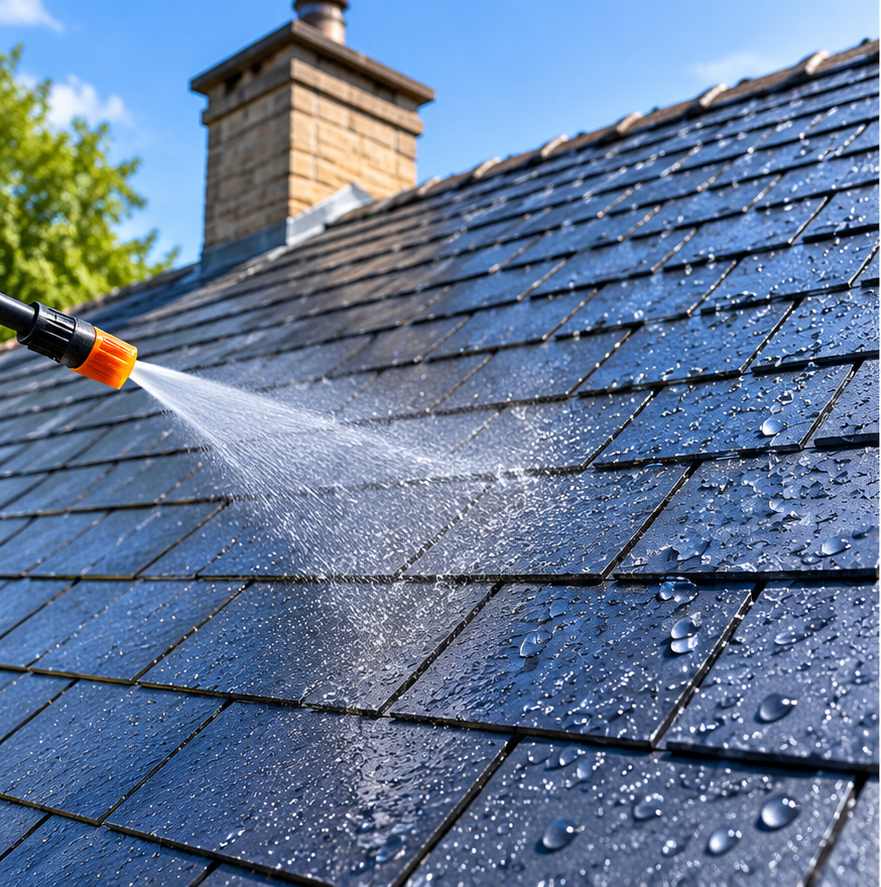
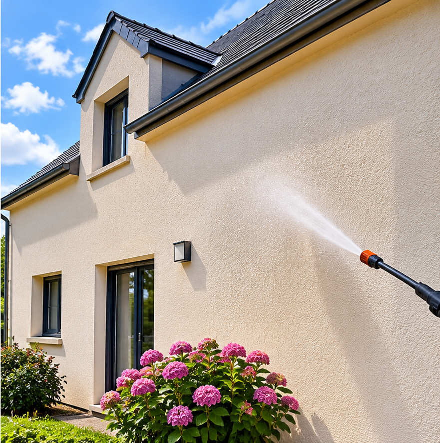

Protégez durablement votre habitation contre l'humidité grâce à un traitement adapté à vos supports.
Demander un devis gratuitUne protection adaptée pour préserver vos surfaces extérieures.
Avec le temps, les toitures et les façades subissent les effets de la pluie, du vent, du gel et de l'humidité. Les matériaux poreux peuvent progressivement absorber l'eau et se dégrader.
CK Toiture & Façade vous propose des traitements hydrofuges adaptés à la nature de vos supports afin de limiter la pénétration de l'eau et de contribuer à leur préservation.
Deux solutions pour protéger et entretenir vos surfaces extérieures.

Après une préparation adaptée, l'application d'un hydrofuge compatible avec votre couverture permet de limiter l'absorption de l'eau par les matériaux poreux.

Les murs extérieurs sont exposés aux intempéries. Un traitement hydrofuge adapté aide à limiter la pénétration de l'eau dans les supports compatibles.
Un travail préparé avec soin pour une application adaptée au support.
Évaluation de l'état de la toiture ou de la façade et choix du produit adapté.
Nettoyage et préparation du support selon son état et sa nature.
Application du traitement hydrofuge dans le respect des préconisations du fabricant.
Vérification de l'application et des finitions.
Nous vous accompagnons dans l'entretien et la protection de votre habitation avec des conseils adaptés à votre projet.
Vous souhaitez protéger votre toiture ou votre façade ? Contactez CK Toiture & Façade pour étudier votre projet.
Téléphone : 06 80 01 49 80
Email : Cedric.49@sfr.fr